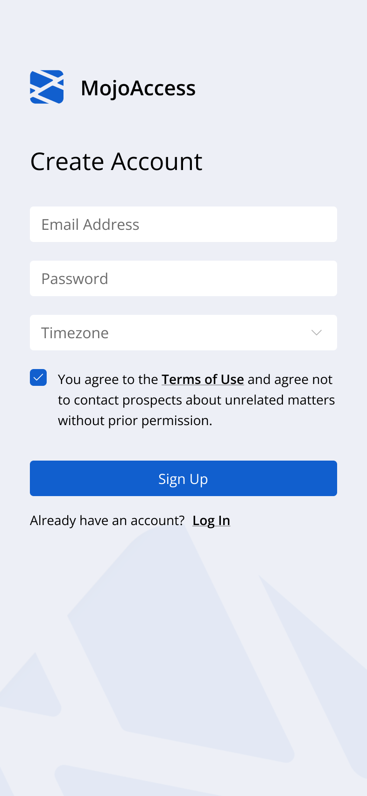

ShowMojo Mobile Application
Context
Property managers and leasing agents rely heavily on mobile devices while moving between properties, coordinating showings, replying to prospects, and handling scheduling changes throughout the day.
The previous mobile experience struggled to support these fast operational workflows. Important information was often difficult to scan quickly, while messaging, scheduling, and task management felt disconnected from each other.
The challenge was not simply fitting desktop functionality onto smaller screens, but designing a mobile experience that worked well in high-context, interruption-heavy situations.


Goals
The redesign focused on helping users manage operational tasks faster and with less cognitive load while away from their desks.
Main goals included:
- making dense scheduling information easier to scan on small screens
- reducing friction between messaging, scheduling, and task management
- improving one-handed usability during fast interactions
- creating clearer hierarchy between urgent and lower-priority work
One of the main challenges was balancing information density with clarity, especially for users switching context constantly throughout the day.
Approach
I started by analyzing the highest-frequency mobile workflows and identifying where users lost time switching between scheduling, messaging, and listing management.
A large part of the work focused on reducing navigation overhead and helping users quickly understand what required attention in the current moment.
The goal was to help users resolve operational issues quickly, without needing to search through multiple screens.
The redesign included:
- simplifying navigation around the most common daily tasks
- improving scheduling layouts for faster scanning
- bringing messaging and actions closer together contextually
- reducing visual noise while preserving important operational details
- using progressive disclosure for advanced functionality and bulk actions
The interface was designed to support quick decision-making in real-world environments, where users are often multitasking, interrupted, or moving between locations.


Outcomes
The redesigned mobile experience made scheduling, messaging, and operational actions feel more connected and easier to manage during fast-paced daily workflows.
Clearer hierarchy and simplified navigation helped reduce friction during common tasks, while the updated layouts improved readability for dense scheduling information on smaller screens.